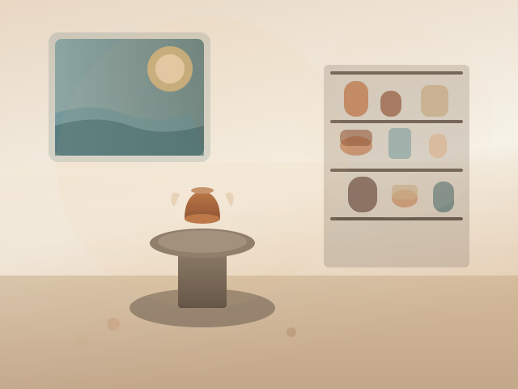
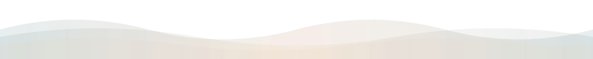

Classes
Six-week intensives, weekend workshops, and private lessons.
Coastal Community Clay
Yachats, Oregon
Nonprofit ceramics studio
Coastal Community Clay is a nonprofit arts organization in Yachats offering classes, open studio hours, youth programs, and community firings that keep coastal creativity thriving.

Your support keeps the studio open, expands scholarships, and brings clay education to coastal schools.

Coastal Community Clay is a nonprofit craft collective bringing ceramic education to the central Oregon coast. We welcome beginners, artists, families, and travelers who want to create with their hands.
Our storySix-week intensives, weekend workshops, and private lessons.
Flexible access for members with on-site support staff.
After-school programs and residency partnerships.
Seasonal sales featuring coastal makers and guest artists.
April 10-12 — Hand-building workshop with resident artists.
May 3 — Bring one bisque piece and join the firing team.
June 6 — Celebrating young makers from the coast.
We reinvest every membership and donation into access, education, and artist support across the coast.

Volunteer, sponsor a kiln firing, or make a tax-deductible donation to keep our nonprofit studio open.

Assist with firings, events, or studio upkeep.
Fund scholarships and materials for coastal youth.
Support school residencies and community programs.
Memberships include studio access, glaze library use, and firing discounts. Scholarships are available.